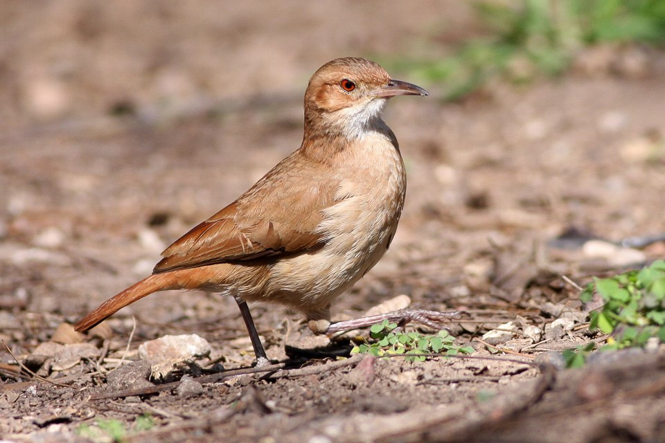
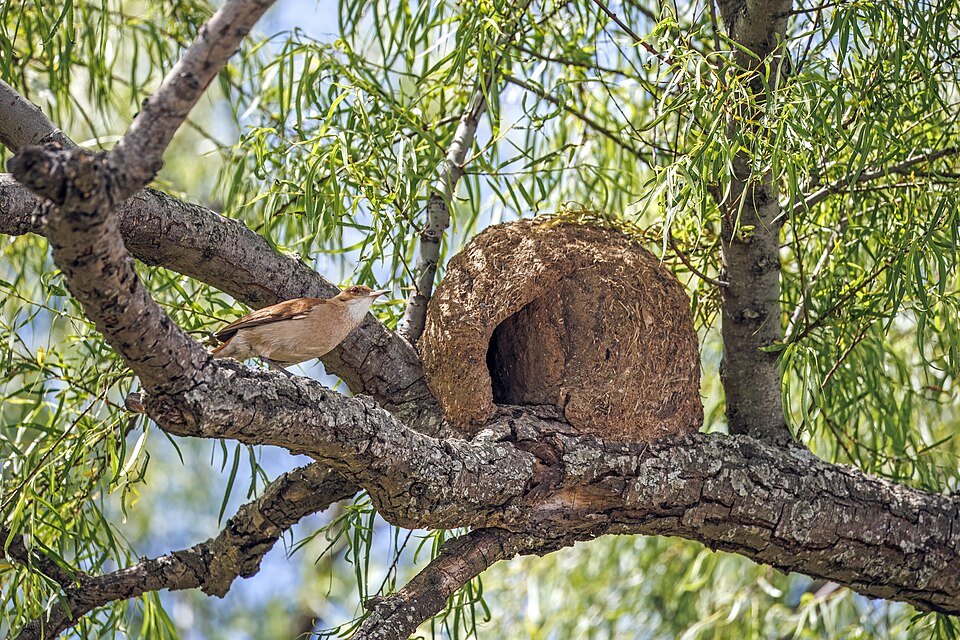

L'Oiseau Fournier roux
Description de l’espèce, habitat, comportement et caractéristiques principales.
Multimédia
Deux vidéos locales intégrées depuis le dossier videos.
Vidéo 1 — Fournier roux avec chant naturel
Vidéo 2 — Observation du Fournier roux
La première vidéo contient le chant naturel du Fournier roux. La seconde présente une autre observation de l’oiseau dans son environnement.
Structure
Une organisation plus lisible, pensée comme des entrées visuelles principales vers les contenus du projet.
Point d’entrée principal du projet avec présentation, accès rapide aux contenus et mise en avant des découvertes.
Description de l’espèce, habitat, comportement et caractéristiques principales.
Explication détaillée du processus de fabrication du nid et de son importance.
Photographies, mises en avant visuelles et observation du Fournier roux.
Sources, documents, liens pédagogiques et contenus complémentaires.
Informations pour joindre l’association, poser des questions ou participer au projet.
Maquettes
Les vues sont maintenant plus grandes et disposées différemment pour mieux hiérarchiser les pages clés.

Vue principale large avec mise en avant de l’oiseau et des accès rapides.



Expérience
À la découverte du Fournier roux
Explorez le projet, découvrez l’espèce, observez ses nids et consultez des données récentes grâce à l’intégration iNaturalist.
Typographie
Exemple de rendu direct de la typographie Luciole pour le cahier des charges, avec aperçu visuel et informations de référence.
Aperçu en direct
Une police pensée pour la lisibilité, utilisée ici pour les titres, textes courants et éléments d’interface.
"Bienvenue sur Fournier roux"
La typographie Luciole a été conçue pour améliorer la lisibilité, notamment pour les personnes malvoyantes, grâce à des formes de lettres claires, un espacement optimisé et une structure sans-serif facilitant une lecture rapide et confortable sur écran comme sur support imprimé.
ABCDEFGHIJKLMNOPQRSTUVWXYZ
abcdefghijklmnopqrstuvwxyz
0123456789 — & ? ! % €
Données
Chargement des informations…
Actualité
Chargement des observations…